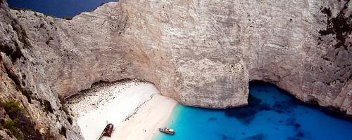

Zante - Zákynthos
Mare
Zante è un'isola dell'arcipelago delle isole Ionie. Quest'isola è famosa per aver dato i natali a Ugo Foscolo e per essere una delle mete elleniche più gettonate dai giovani ogni anno. È raggiungibile sia via nave che per via aerea.
Navajo Beach
 Tra le sue spiagge, la più famosa è indubbiamente Navajo Beach, una delle 10 spiagge più belle al mondo. Questa spiaggia non è accessibile via terra, essendo racchiusa in un'insenatura. Da un mare avente tutte le sfumature di blu, ognuna accesissima e intensa, si passa alla spiaggia, bianca e finissima. Nella parte più interna della spiaggia si trova un relitto arenato ed esplorabile.
Vita notturna
Zante offre una vita notturna senza paragoni, con afterbeach party che cominciano al calare del sole. Al termine di questi ci si può dirigere a Laganas, il cuore dell'isola: in una sola via ci sono decine di bar e discoteche che scoppiano di giovani. Particolarmente curato è il Rescue Club, discoteca in cui si tengono i paint party più grandi d'Europa.
Commenti